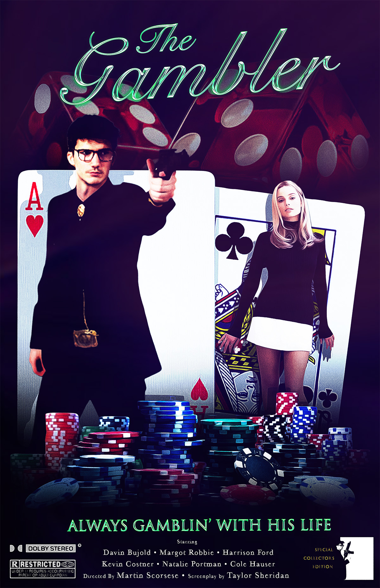
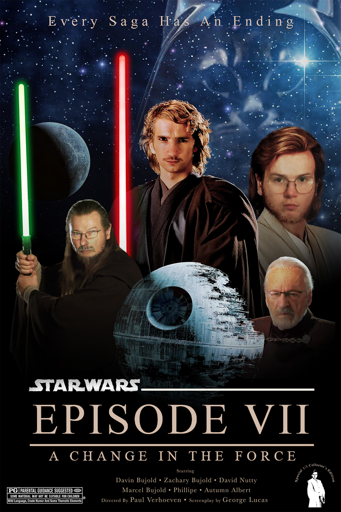
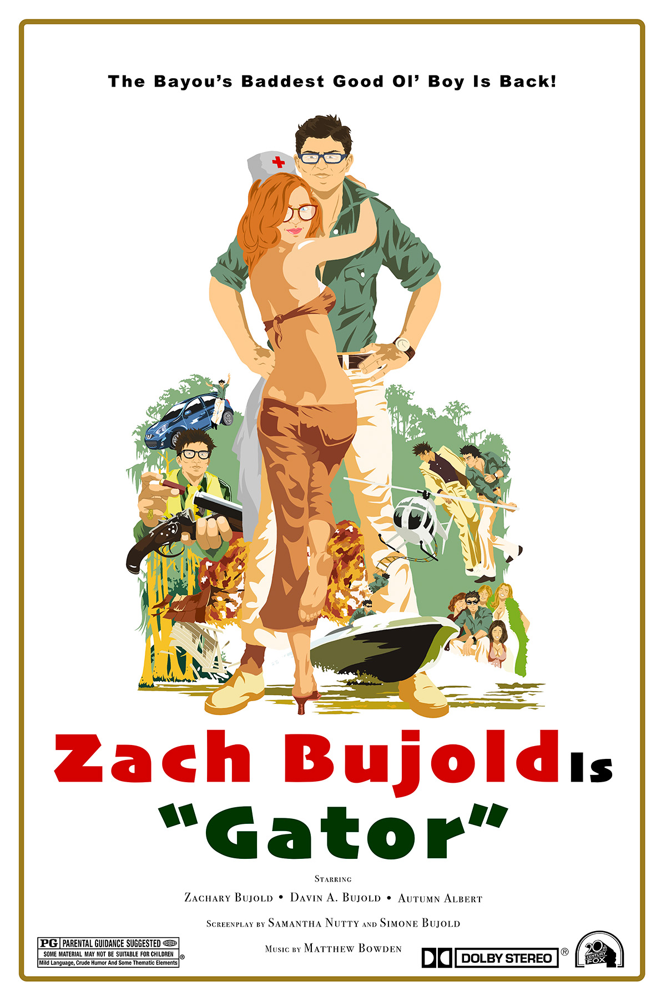

Posters · Branding · Illustration
Back Home
A fun action movie poster that I created for my digital design class. Imagine "Casino" meets "James Bond".

This is a personal poster that I designed in photoshop as a gift for my family. I used a specific design technique that allowed me to switch the characters faces with that of my family members.

Another personal poster that I drew as a spin on the Burt Reynolds movie "Gator", where I drew myself and my brother as the main protagonist and antagonist.